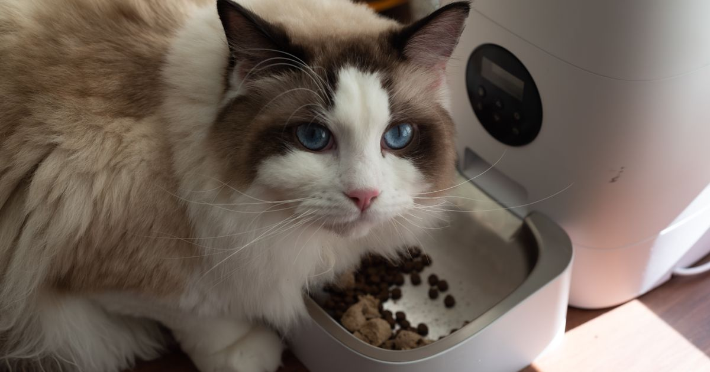

Este post contém links de afiliado. Podemos receber uma comissão em compras feitas através deles, sem custo adicional para você.
Entre os alimentadores automáticos para gatos mais vendidos no Mercado Livre em 2026 estão modelos compactos de 2L com timer simples, versões Wi-Fi de marcas como Newpet e Positivo Casa Inteligente, e modelos especializados em ração úmida como o Cat Mate C500. A escolha certa depende de quantos gatos você tem, se usa ração seca ou úmida, e de quanto controle remoto você quer.
Key Takeaways
- Alimentadores compactos (2L) com app Wi-Fi, como os da linha Newpet, são indicados para 1 gato com programação remota (Mercado Livre — Comedouro Automático Gatos, retrieved 2026-08-20).
- O modelo Positivo Casa Inteligente (4L) tem autonomia para até duas semanas de um gato adulto, útil para viagens curtas.
- Para ração úmida, o Cat Mate C500 é uma opção especializada com sistema de gelo reutilizável para manter o alimento fresco.
- Gatos comem porções menores e mais vezes ao dia — priorize modelos com boa granularidade de porção, não apenas capacidade total.
guia completo de comedouro automático para pet
Indicado para tutores de 1 gato que moram em apartamento e quer controle remoto sem um aparelho grande. Conecta-se ao app Tuya via Wi-Fi, permitindo programar porções remotamente.
Com 4 litros de capacidade, atende um gato adulto por até duas semanas — vantagem real para quem viaja com frequência e não quer depender de alguém para reabastecer o comedouro. O modelo também é compatível com Alexa e Google Assistant e tem sensor anti-obstrução (Cabine Celular, retrieved 2026-08-20).
Para gatos que comem ração úmida ou têm restrição alimentar que exige alimento fresco, o Cat Mate C500 usa um par de bolsas de gelo reutilizáveis sob os pratos para manter a comida em temperatura segura por mais tempo — uma estimativa realista é de 8 a 12 horas em ambientes quentes (Cats.com, retrieved 2026-08-20).
review completo do Cat Mate C500
| Critério | Newpet 2L Wi-Fi | Positivo 4L | Cat Mate C500 |
|---|---|---|---|
| Capacidade | 2L | 4L | 5 pratos (ração úmida/seca) |
| Wi-Fi/App | Sim | Não obrigatório | Não |
| Ração úmida | Não recomendado | Não recomendado | Sim (com gelo) |
| Ideal para | 1 gato, apto pequeno | Viagens, multi-semana | Restrição alimentar, ração fresca |
Nossa leitura do mercado: ao comparar os modelos para gato com os equivalentes para cachorro (ver comparativo de comedouros para cachorro), a diferença mais consistente não é o preço, mas a granularidade de porção — modelos para gato tendem a permitir configurações menores e mais frequentes, refletindo o padrão alimentar da espécie.
comedouro automático gato x cachorro — diferença detalhada
Um gato sozinho se adapta bem a qualquer um dos três modelos deste comparativo, já que a competição por comida não é um fator. Em casas com dois ou mais gatos, o cenário muda: um alimentador de porta única tende a ser dominado pelo gato mais assertivo, que come sua porção e a do outro antes que ele chegue ao pote.
Para duas ou mais gatos, a alternativa mais confiável é um aparelho por gato, posicionados em cômodos ou cantos diferentes da casa, para que cada um tenha seu próprio horário e porção sem disputa. Modelos com reconhecimento por microchip ou coleira RFID existem no mercado internacional, mas ainda são raros e caros no Brasil, o que torna a separação física dos aparelhos a solução mais prática para a maioria dos tutores.
Gatos costumam estranhar o barulho do mecanismo de dispensa nas primeiras vezes, e uma transição malfeita pode levar o animal a evitar o aparelho. O primeiro passo é posicionar o alimentador desligado, sem ração, no mesmo local onde o gato já come, deixando-o alguns dias apenas para o animal se acostumar com o objeto novo no ambiente.
Depois dessa fase de habituação, programe uma primeira porção no horário em que o gato já espera ser alimentado, mantendo o pote antigo disponível ao lado por uma ou duas semanas. Reduza gradualmente a quantidade no pote antigo até retirá-lo, observando se o gato come normalmente pelo alimentador automático antes de depender dele por completo.
A limpeza regular evita dois problemas comuns: acúmulo de gordura da ração, que pode rançar e causar recusa alimentar, e falhas mecânicas por resíduo de pó de ração no mecanismo de dispensa. Para ração seca, o reservatório e o funil podem ser limpos a cada duas ou três semanas com um pano seco; já o prato onde o gato come deve ser lavado diariamente, ou a cada troca de porção em modelos para ração úmida como o Cat Mate C500.
Vale checar o manual de cada modelo antes de usar água diretamente nos componentes eletrônicos: a maioria dos alimentadores com Wi-Fi tem o compartimento do motor e da placa separado do reservatório de ração, mas nem todos são totalmente vedados contra umidade.
Modelos de porta única, como a maioria dos compactos de 2L, funcionam bem para um gato. Em casas com dois ou mais gatos, vale considerar um aparelho por gato, para evitar que o mais dominante coma a porção do outro.
Introduza o aparelho ainda desligado perto do local onde o gato já come, deixando-o associar o objeto ao ambiente antes de qualquer barulho de dispensa. Depois, programe a primeira refeição no horário da rotina atual e mantenha o pote antigo por alguns dias, retirando-o aos poucos.
Substitui para a maioria das rotinas diárias, mas é recomendável manter um pote reserva para casos de queda de energia ou falha do mecanismo, já que nenhum aparelho eletrônico está livre de travar ocasionalmente.
O reservatório de ração seca pode ser limpo a cada 2 a 3 semanas, mas o prato onde o gato come deve ser lavado diariamente, especialmente em modelos para ração úmida, para evitar acúmulo de gordura e bactérias.
Para a maioria dos tutores de gato, um modelo compacto com Wi-Fi resolve bem o dia a dia. Quem viaja com frequência ganha mais com a capacidade estendida do Positivo 4L, e quem lida com ração úmida ou restrição alimentar deve priorizar um modelo especializado como o Cat Mate C500.
review completo do Cat Mate C500 · como configurar o app do comedouro Wi-Fi · vale a pena um comedouro automático?
Escrito pela Equipe Smart Pet Gadgets. Veja nossa política editorial e como verificamos as fontes citadas neste artigo.
🐾 Confira o preço e a disponibilidade atual no Mercado Livre.
Ver no Mercado Livre →Link de afiliado: podemos receber uma comissão por compras feitas através deste link, sem custo adicional para você.
Nildo Alves — curadoria de produtos pet no Smart Pet Gadgets. Testa e pesquisa produtos para cães e gatos, cruzando especificações de fabricante com boas práticas veterinárias e dados de mercado.
Sobre o Smart Pet Gadgets · Contato · Política editorial e de afiliados